Where your funnel is leaking qualified STR owners, and exactly how to fix it.
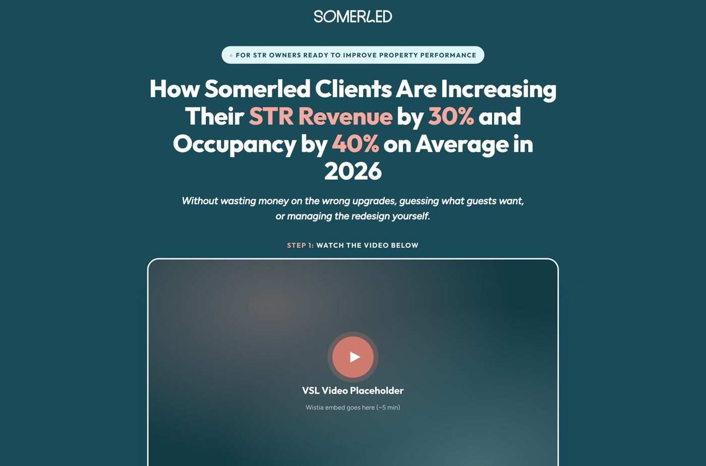
Executive Summary
I went through your funnel the way a new prospect would, filling out both forms and booking a call. Two days later I still hadn't received anything that made the case for Somerled.
That's a shame, because the proof is there: press in Business Insider and AD, plus 1,000+ profitable STRs designed. It just never reaches the prospect while they're deciding whether to book.
All of it is fixable. I've already built the new pages.
The Top 3 Fixes
A focused, benefit-led page with a 5-minute video and one action: "Free Design Strategy." Less copy, and designed for phones first.
Replace the website form + Calendly combo with a single Typeform that saves partial responses, so every half-finished application can still be followed up.
Answer objections with videos on the confirmation page, then keep showing up with daily emails and retargeting ads until the call. By then most of the selling is done.
Funnel Scorecard
Every stage between first seeing an ad and showing up to the call, graded.
Good volume, but light on testimonials and static reels for retargeting. Ads aren't offer-led, so the landing page has to do the selling.
Reads like a website. Lots to scroll and nothing pushing visitors to act. There's no video, and the mobile layout breaks.
Two forms (website form + Calendly) before booking. Nothing is captured from people who start but don't finish.
A bare "You are scheduled!" screen at the exact moment prospects start asking "why should I show up?"
One automated text and two logistics emails. Nothing that builds authority between booking and the call.
Strong Instagram short-form, but no long-form content (YouTube, masterclass) to nurture buyers.
Stage 2 · Landing Page
Current page · desktop
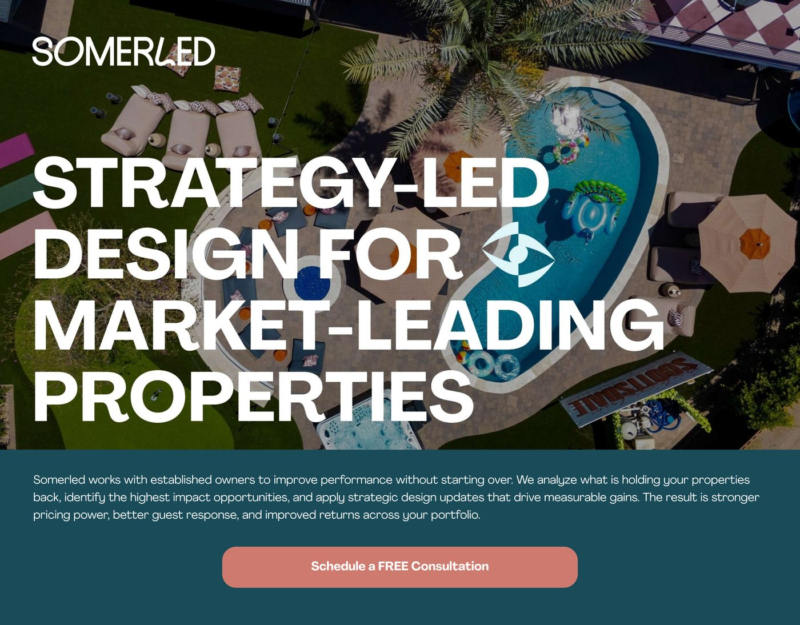
of visitors scroll past the hero. 100% see it. The eyebrow, headline and video carry the page.
Current page · mobile
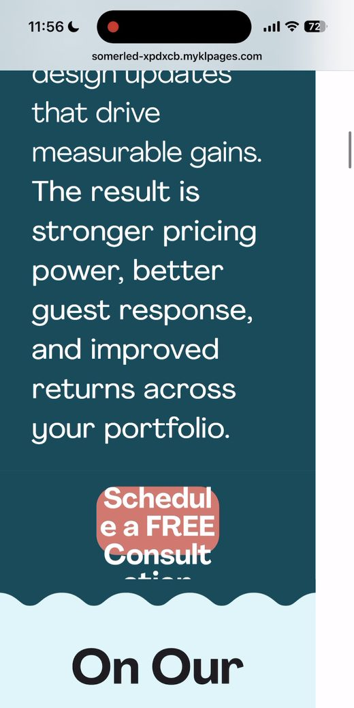
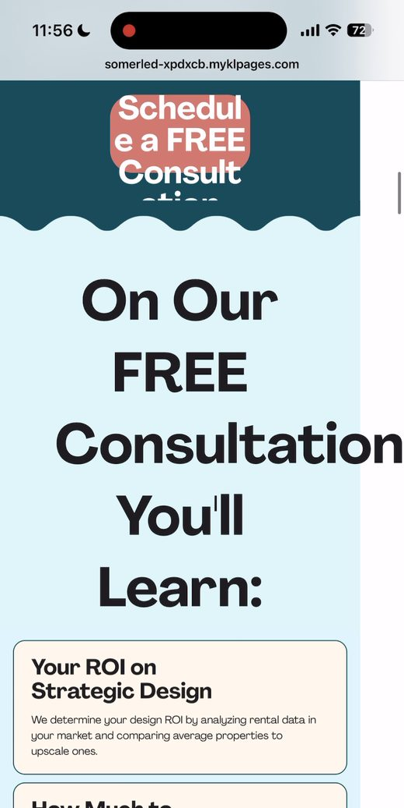
Left: the main button is squished and cut off. Right: the headline runs off the edge of the screen.
Stage 2 · Landing Page
New page · desktop
Mobile
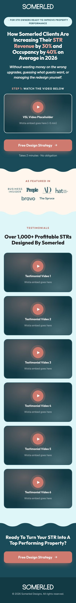
Stage 3 · Application
Today: two forms to book one call
Form 1 · Website form
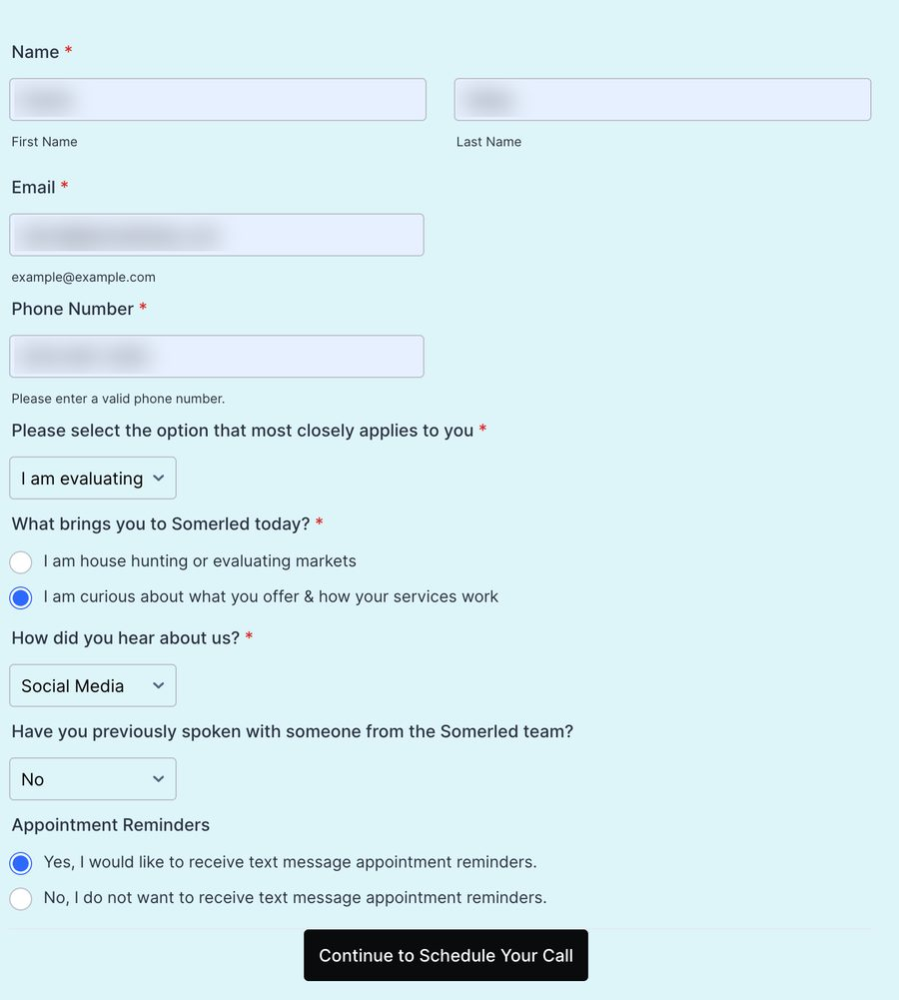
Form 2 · Calendly: pick a time…
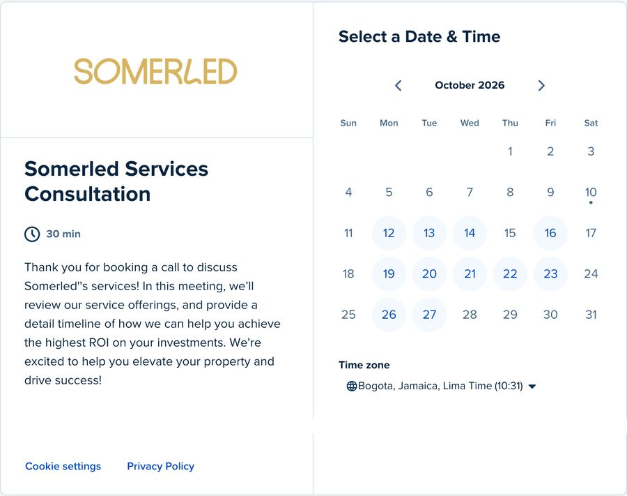
…then fill in more details
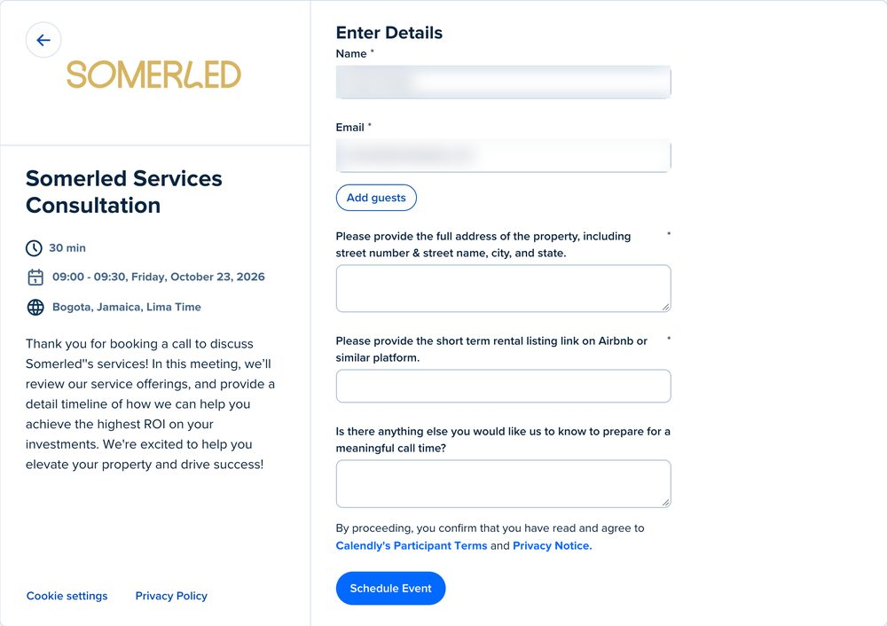
Proposed: one place, one form
Stage 4 · Confirmation Page
Today
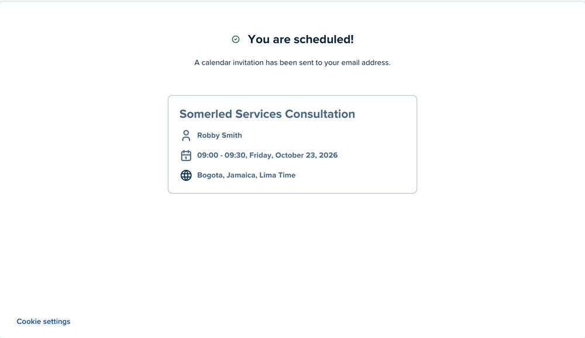
New page
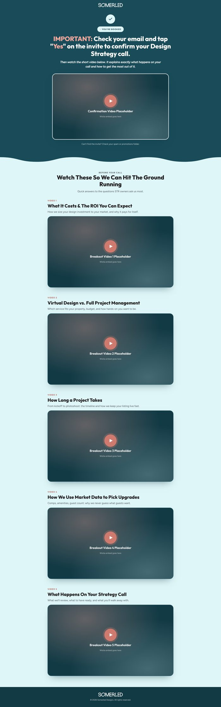
Stage 5 · Pre-Call Nurture
What a prospect receives today
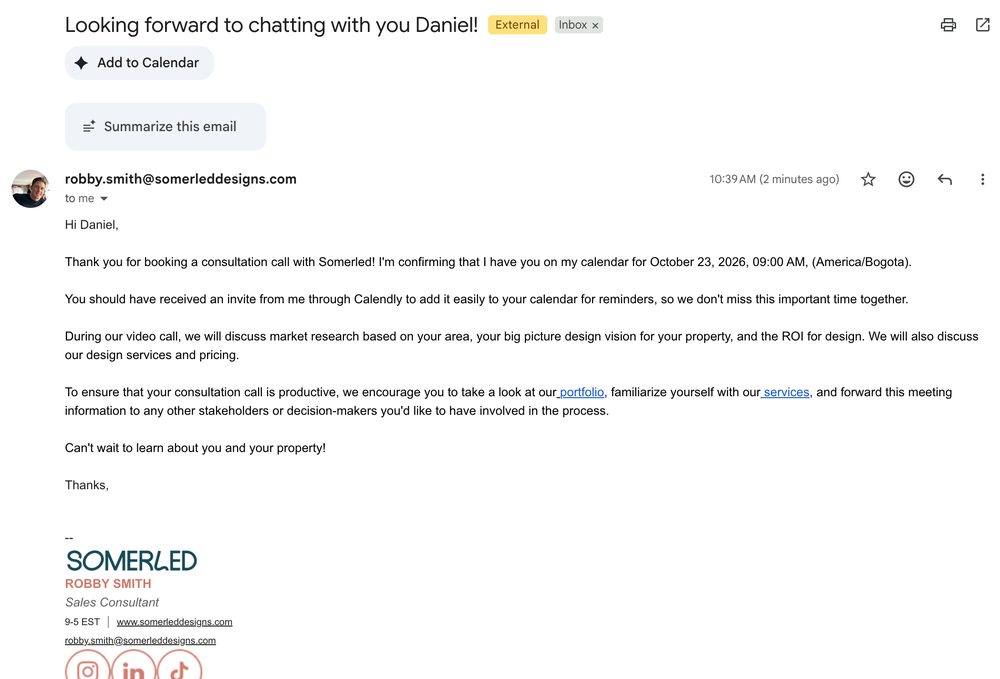
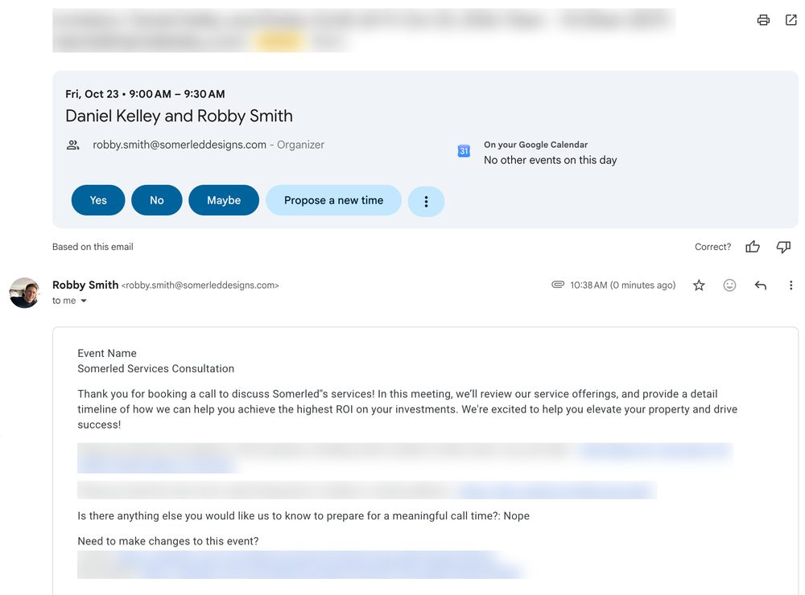
One automated text, a calendar invite, and a friendly logistics email. Helpful, but none of it builds the case for working with Somerled.
The plan: surround them until the call
Sent every day between booking and the call. Each one should teach the reader something useful and, along the way, take on a common objection:
Stages 1 & 6 · Ads and Content
of content exposure is what people typically need before making a buying decision. Long-form content gets them there faster.
Roadmap
Biggest leaks first. Each phase builds on the one before it.
Goal: more applications from the same traffic.
Goal: higher show rates and warmer calls.
Goal: more qualified owners entering the funnel.
Next Step
I've already built the landing, confirmation and not-a-fit pages. Give me 30 minutes and I'll walk you through them, then we can plan the launch together.